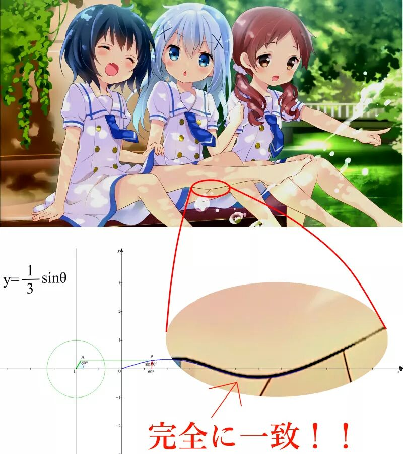
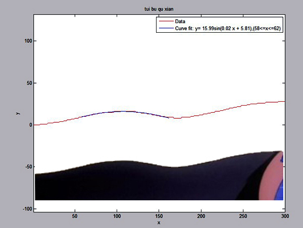

With four parameters I can fit her leg, and with five I can make her wiggle hers skirt.
- John von Neumann
事情的起因是这样的：2ch上有个人宣称发现了完美小腿曲线的方程：y=1/3*sinθ

于是国内便有人做验证，利用Matlab导入图片做曲线拟合，还原曲线函数：

下面我们自己动手试一下，不过这里不用Matlab，直接在canvas上画：
1
2
3
4
5
6
7
8
9
10
11
12
13
14
15
16
17
18
19
20
21
22
23
24
25
26
27
28
29
30
31
|
function shiro = (x) => 1/3 * Math.sin(x)
function natsuki = (x) => 22.4 * Math.sin(0.0136 * x + 4.15)
function draw() {
let canvas = document.getElementById('canvas');
if (canvas.getContext) {
let ctx = canvas.getContext('2d');
let xx, yy, x0 = 0, y0 = 0.5 * canvas.height;
let scale = 50;
ctx.beginPath();
ctx.lineWidth = 1;
ctx.strokeStyle = "rgb(227,189,148)";
ctx.moveTo(x0, y0);
for (let x = 0; x <=Math.PI ; x+= 0.1) {
xx = scale * x;
yy = scale * shiro(x);
ctx.lineTo(x0 + xx, y0 - yy);
}
ctx.stroke();
}
}
|
还可以用分段函数做拟合，画的方法还是一样，只是分4次不同区间，换区间时把上一次画完的点(xx, yy)作为起点即可。
1
2
3
4
| | 0.0016x^2 + 0.0728x - 0.2705 , 0<=x<=58
y(x) = | 15.9943sin( 0.0191x + 5.8051) , 58<x<160
| 0.0034x^2 - 1.1308x + 103.0777 , 160<=x<=210
| -27.9595sin( -0.0111x - 17.0257) , 210<x<=300
|
三维的图形可以用Three.js代入u，v参数方程就能画了，不过原po似乎并没有提供对应的公式。待有新发现时在更新吧。 // TODO
Reference
http://bbs.saraba1st.com/2b/thread-1026576-1-1.html